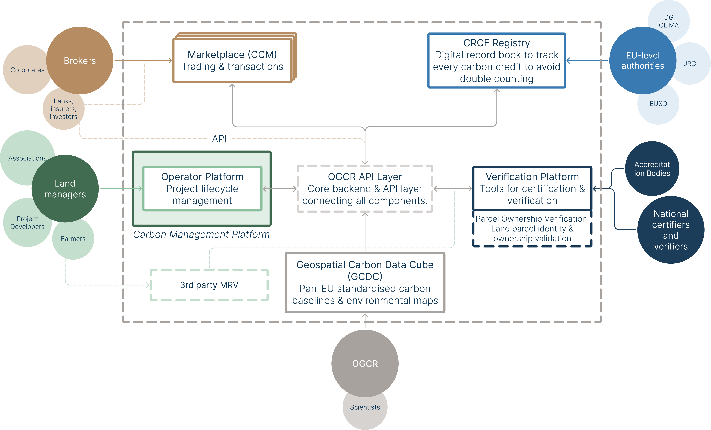
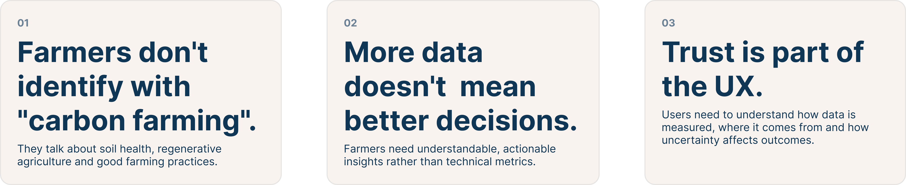
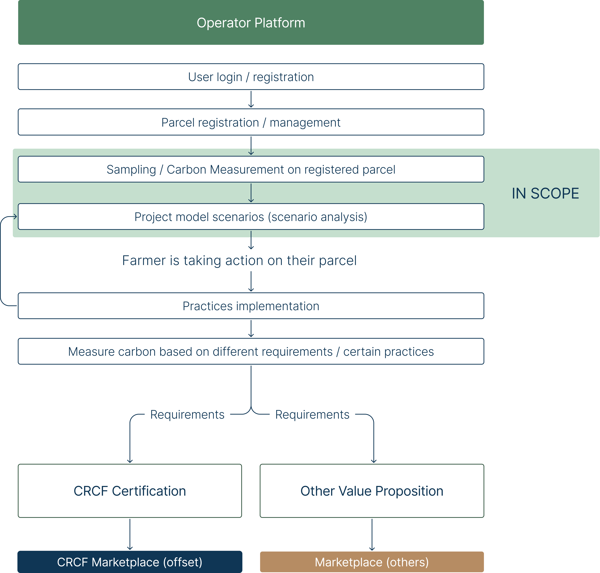
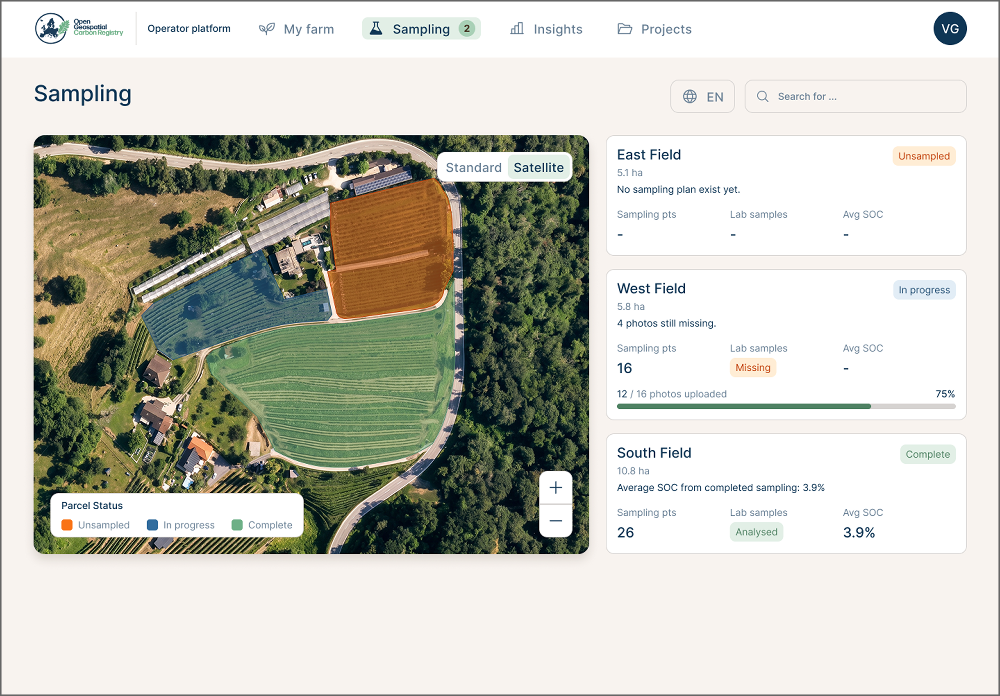
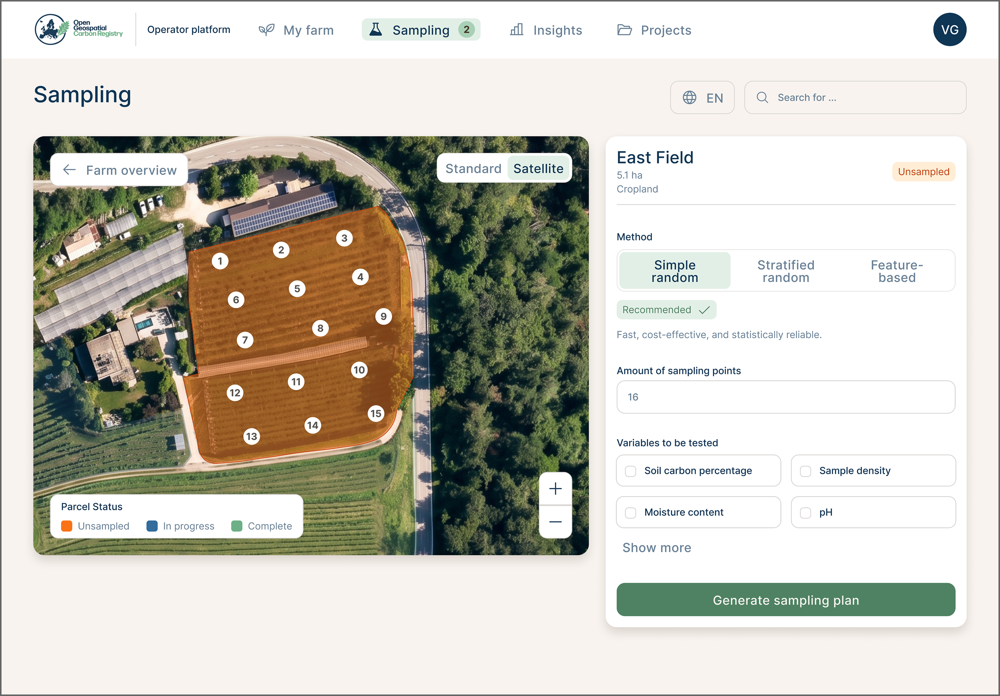
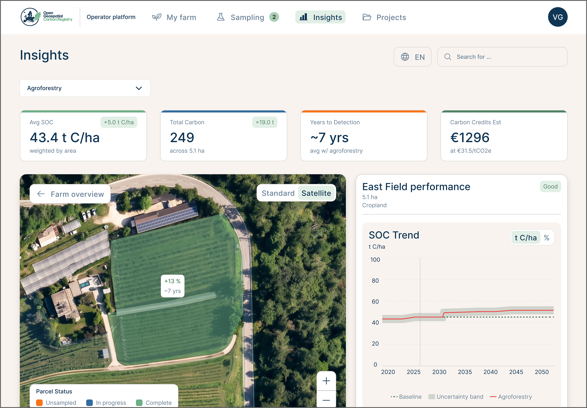
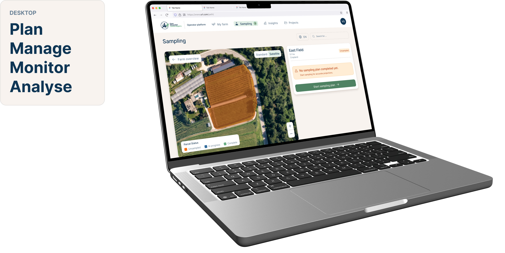
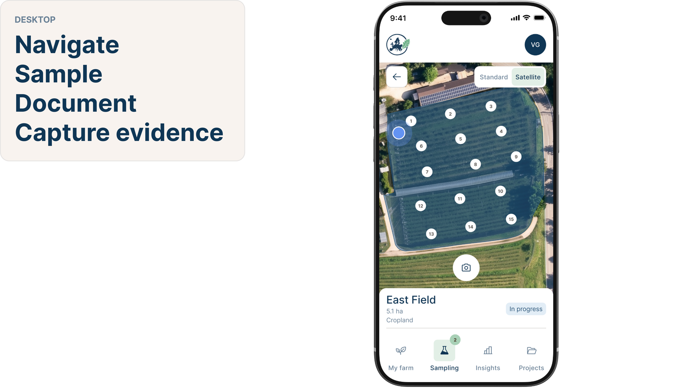
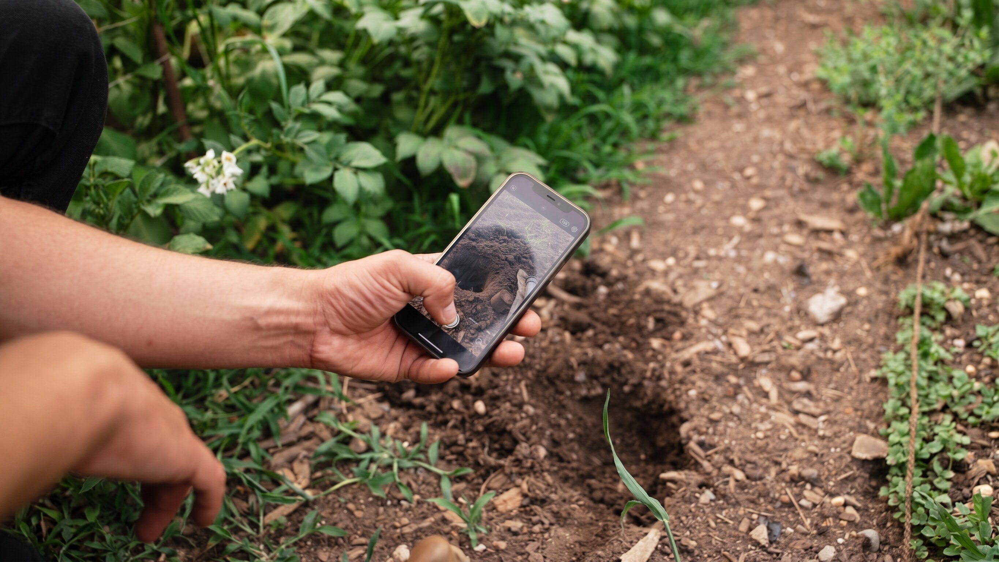
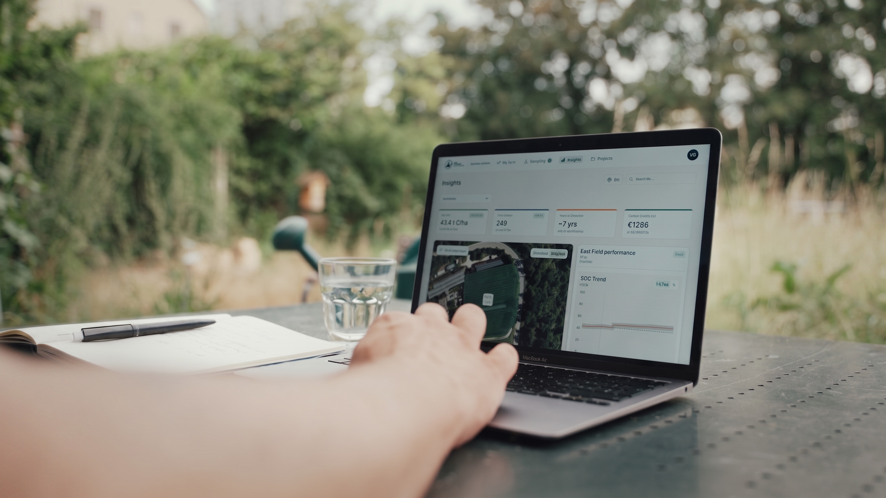

OGCR -
Operator
Platform
An operator platform that transforms complex soil monitoring and carbon farming data into guided workflows and actionable insights for farmers and land managers.
Context
Carbon farming brings together agriculture, environmental science, geospatial data and emerging carbon certification systems. OGCR is developing an open digital infrastructure to monitor and verify soil carbon across Europe. Within this ecosystem, the Operator Platform is the farmer-facing layer where land managers plan, execute and monitor carbon farming activities. My thesis focused on translating this technically complex infrastructure into a usable product experience for farmers and land managers.

Challenge
How can a technically valid carbon farming system become understandable, useful and actionable for the people managing the land?
Existing carbon farming systems are often built around traceability, compliance and scientific validity. Farmers, however, make decisions based on different factors: economic viability, operational effort, timing, risk and confidence in expected outcomes.
Research and Insights
The research combined desk research with field immersion through workshops, interviews, and surveys to build a comprehensive understanding of farmers, their practices, and their needs.

System Flow
The Operator Platform is the lifecycle layer of OGCR. It sequences the work — farm overview, sampling, laboratory results, insights — so operators can plan, sample and monitor without facing the full registry architecture.

Principles
The research shifted the product direction from a primarily compliance-oriented tool towards a guided, decision-support experience based on the following design guidelines:

Design system

Interface
The OGCR interface transforms complex soil and carbon data into a clear workflow for farmers and operators. The screens guide users from managing parcels and collecting field data to analysing results, exploring environmental insights, and comparing possible carbon farming scenarios.




Digital Product
One product, two contexts.
The desktop platform is designed for deeper analysis and decision making, giving operators an overview of their parcels, soil data, laboratory results, and carbon farming scenarios.The mobile experience brings the workflow into the field, supporting users while collecting and reviewing data directly on site.


User Validation
The prototype was tested with a farmer to evaluate usability, clarity, and decision-support potential.

